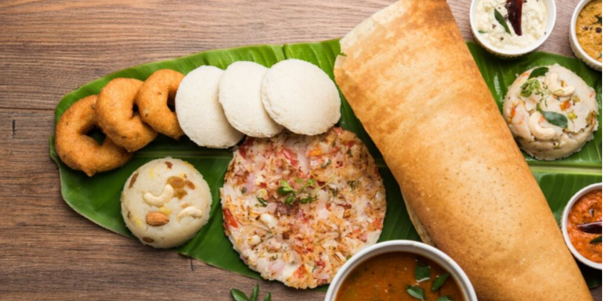
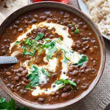

Snacks



Dosa Rs. 100.00
A dosa is a thin batter-based dish (usually crispy) originating from South India, made from a fermented batter predominantly consisting of lentils and rice.
Pizza Rs. 250.00
pizza, dish of Italian origin consisting of a flattened disk of bread dough topped with some combination of olive oil, oregano, tomato, olives, mozzarella or other cheese, and many other ingredients, baked quickly
Momos Rs. 150.00
Momo is a type of steamed dumpling with some form of filling,
Main course
Snacks
Dal Makhani Rs. 150.00
A relatively modern variation of traditional lentil dishes, it is made with urad dal (black lentil) and other pulses, and includes butter and cream